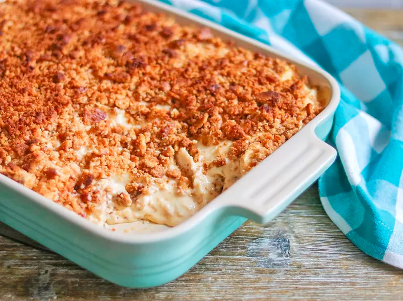

Return to Homepage
Creamy Chicken and Rice
This casserole is very creamy with a crunchy topping. It tastes even better when reheated for leftovers!

Ingredients
- 4 cups cooked white rice
- ¼ cup butter
- ¼ cup all-purpose flour
- 2 cups milk
- 2 teaspoons chicken bouillon powder
- 1 teaspoon seasoned salt
- ½ teaspoon garlic powder
- ¼ teaspoon ground black pepper
- 5 cups cooked, shredded chicken breast meat
- 12 ounces processed cheese food (eg. Velveeta), cubed
- 2 cups sour cream
- ½ cup butter
- 2 cups crushed buttery round crackers
Steps
- Preheat oven to 450 degrees F (230 degrees C).
- Spread rice in the bottom of a 9x13 inch baking dish; set aside.
- In a medium saucepan melt butter or margarine and stir in flour until smooth. Gradually add milk, bouillon granules, seasoned salt, garlic powder and pepper. Stir all together and bring to a boil. Let simmer and stir for 2 minutes or until thickened and bubbly. Reduce heat; add chicken, cheese and sour cream. Stir until cheese is melted. Mix all together and pour mixture over rice.
- Melt 1/2 cup butter or margarine in saucepan and toss with crushed cracker crumbs. Sprinkle crumb mixture over casserole. Bake in the preheated oven for 10 to 15 minutes or until heated through.